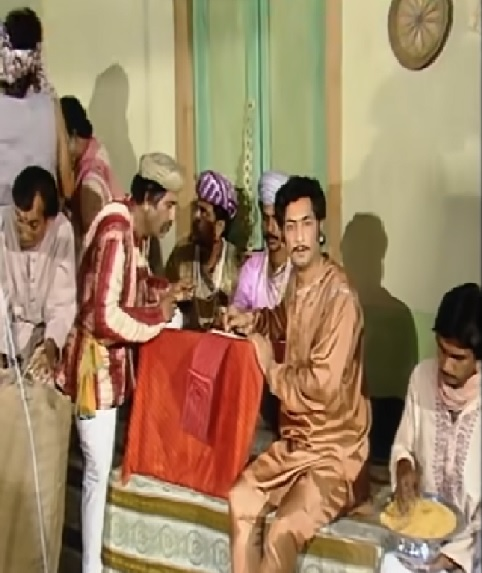
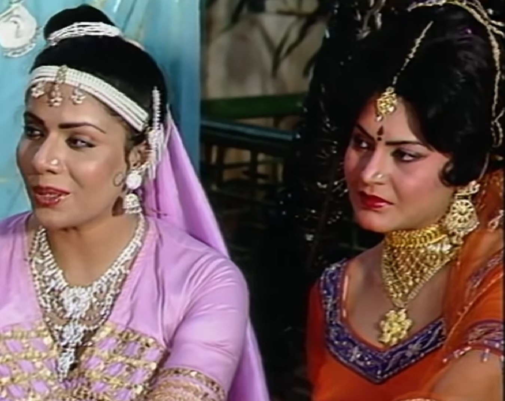

|  |  | King Vikram comes again to capture Betal and captures him and puts him in his custody. He takes him along so that he can hand over that betal to the sage. Betal tells Raj Is it that he is going to catch hold of Betal after getting influenced by the words of that sage? But that monk is very cunning. Another story on the way to Betal Vikram Listens. The prince of Ujjaini city, whose name was Dharamraj, was a businessman. He sends his servant to bring ration to his house. That servant would go to Seth's house. If there is a Seth's accountant there, he helps that king's servant to rest. Aly says and tells that Seth ji has just gone out, I am so worried for you. I take out all the ration. Seth had three daughters Indulekha, Tarawali and Mriganwati all three were very gentle. All three of them also had maids, all three of them were their own. Talking about mistresses, whose mistress is the most gentle? The prince's servant was also listening. Prince's servant in his words So much is lost that it reduces the quantity of the entire ration. when he comes back When he takes the goods, the king's courtiers tell the king that all the goods Has arrived in wrong quantity. The prince asks his servant why he How did he commit the mistake? The servant tells the prince that in fact for some days his Meditation is entangled in the subject of tenderness. prince's servant that whole thing He tells that the Seth whose house he had gone to get ration has three daughters. All three are very beautiful and very soft. listening to the prince's servant When he becomes anxious to meet their girls, he goes to Prince Seth's house. Goes to Seth's house on the pretext of sending wrong ration home and meets the accountant there. Together they get angry over the issue of ration. The accountant apologizes to them and The prince sits in the rest room to rest. Munim Seth Jakar goes to the daughters and tells them that they have to serve his prince. Indulekha would go to the prince to serve him if she wanted to help him. Is. Indulekha falls in love with the prince. To Prince Indulekha Seeing him lost in thoughts, they throw flowers on his cheek. | Due to which Indulekha gets hurt and Indulekha starts crying in pain. Prince He apologizes to Indulekha that he got hurt because of her. at night When Tarawali comes to feed the prince, she also sees the prince. She falls in love with him. Prince Tarawali out into the silver night When he asks to go for a walk, Tarawali tells him that Chandni I can't go, she has trouble with moonlight. but the prince insists When given, the string comes out. Tarawali gets blisters on his body due to moonlight Let's go. The prince is surprised to see all this that the wound caused by the flower It happens and the skin gets burnt by the moonlight. the prince wakes up in the morning So the accountant comes to him and says that all his things are ready and his things are also ready. If given, the prince tells the accountant to get all the spices ground. Will wait here. Mriganvati comes to serve the prince and asks him She asks how he slept at night and what dreams he had. The prince starts laughing after listening to her. Mriganwati prince's laughter Hearing this she tells them to please laugh softly and tolerate more sound. Can't do it. Then the accountant starts grinding the spices, the sound of which Mriganwati becomes unconscious. The prince is surprised to see this too. Seth ji returns and he apologizes to the prince because of his Because of this he had to suffer all this. The prince tells Seth ji that he When a merchant wants to marry a daughter, Seth asks him which daughter he wants to marry. If the prince wants to marry the one then he says the one who is the most gentle. |